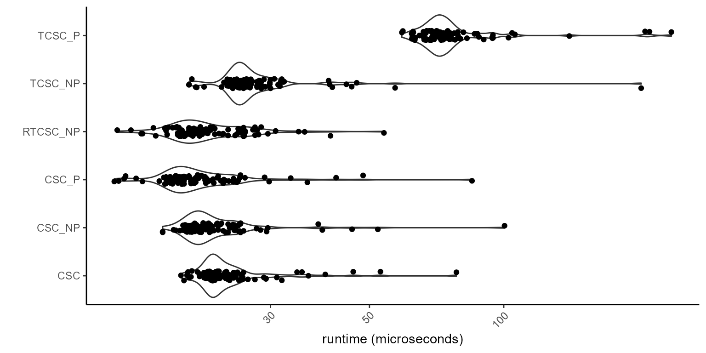
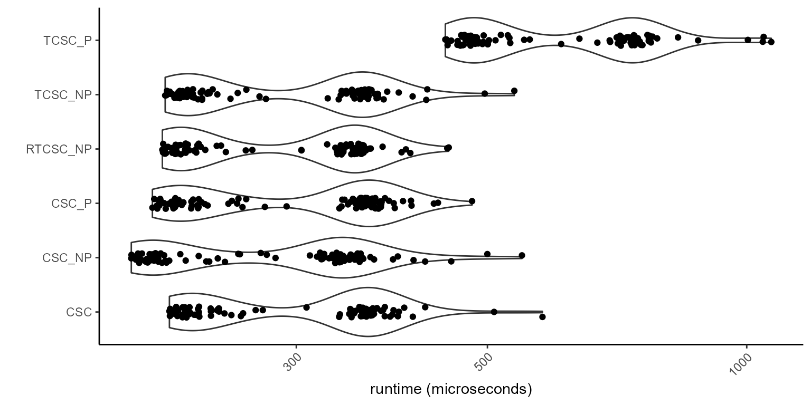
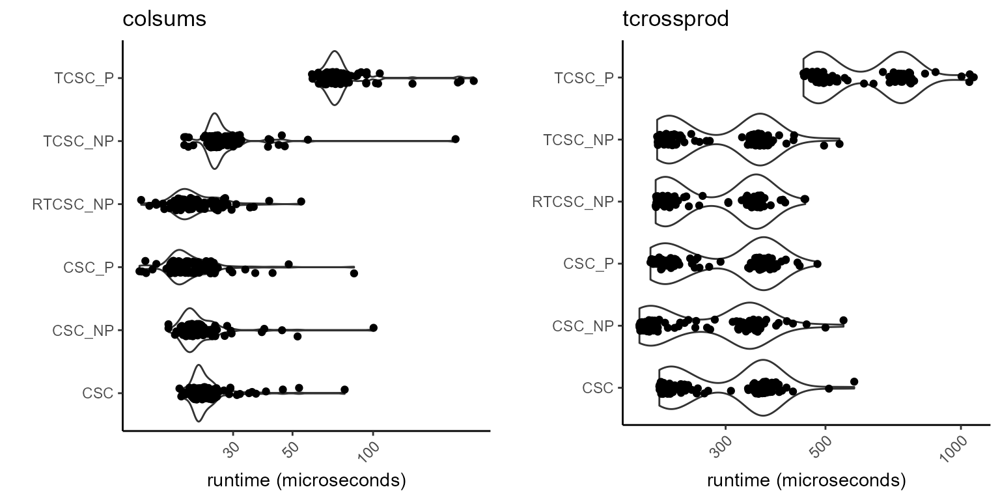
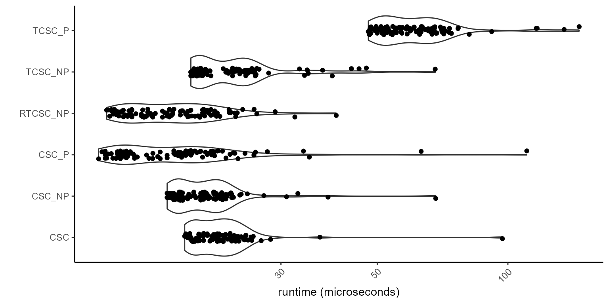
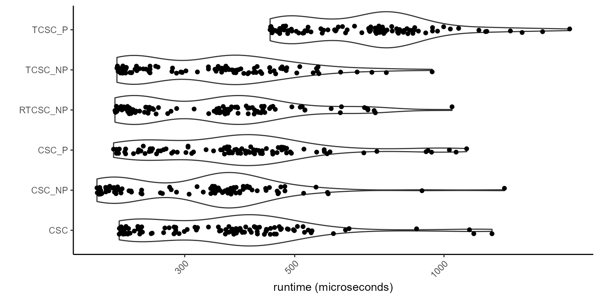
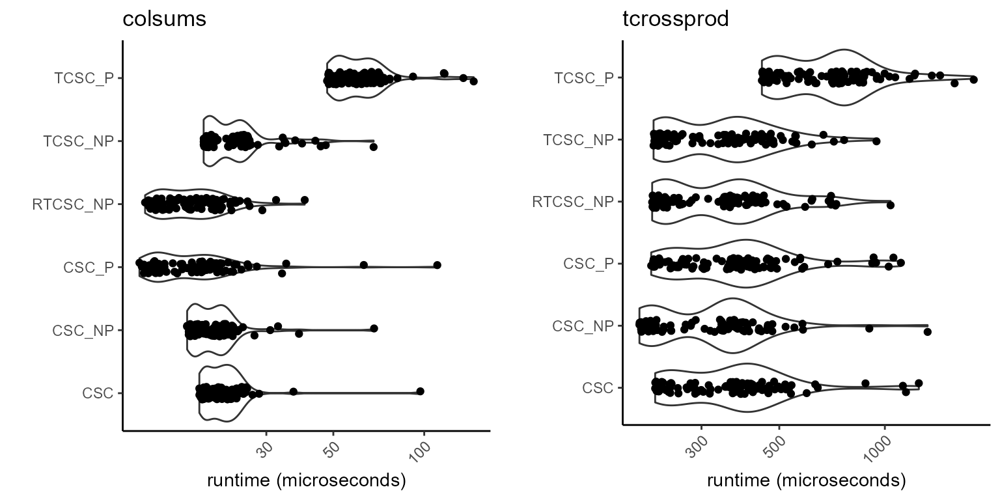
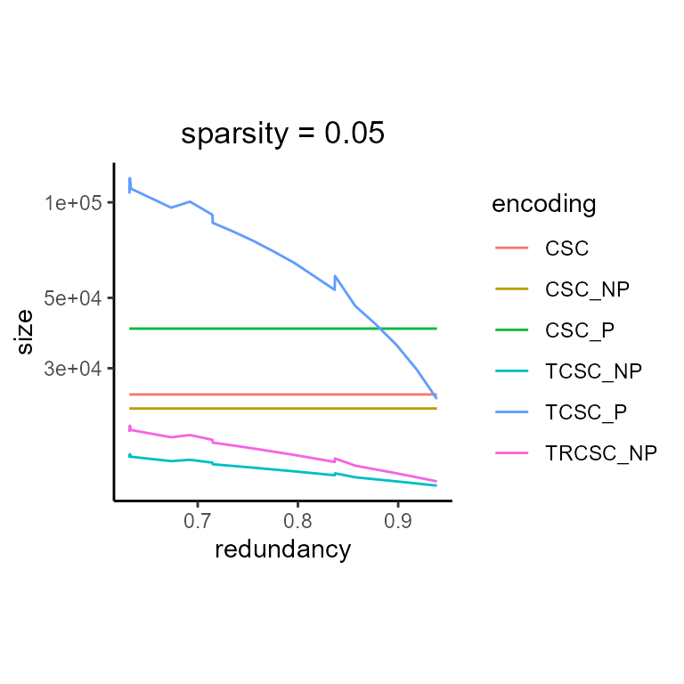
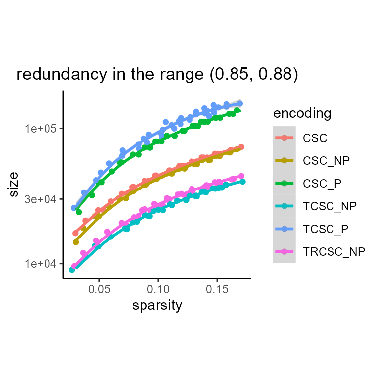
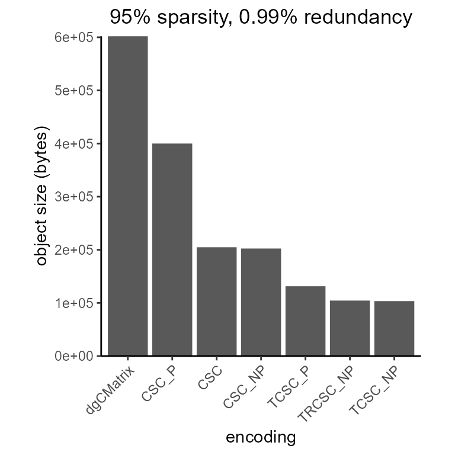

Vectorized Sparse Encoding
introduction.RmdVectorized Sparse Encodings (VSE) efficiently compress sparse data in single-vector strucutres. VSEs are column vectors with sparse random access iterators that instruct a generic sparse matrix wrapper class how to interpret the sparse encoding. A sparse matrix is simply a of VSEs for each column.
A VSE is a column vector, and can be ordered into a matrix-alike format using . In such a configuration, VSE sparse matrices can hold up to 2^32 non-zero elements in each column.
Types of Vectorized Sparse Encodings
There are several types of VSEs, categorized as follows:
-
CSC: Colum Sparse Compressed is the base structure, and records non-zero value/index information in some form or another. -
P: type polymorphic, meaning indices and values can be different types. -
NP: type non-polymorphic, meaning indices and values must be of the same type (usually integral) -
T: Tabulated, meaning each unique value is only given once, and precedes indices at which that value occurs. -
R: Run, in tabulated storage, where a value is immediately followed by the run size (number of indices with that value) followed by the indices at which that value occurs.
The following VSEs are implemented in this package: CSC
(not vectorized), CSC_P, CSC_NP,
TCSC_P, TCSC_NP, and
TRCSC_NP.
Internal Structure of VSEs
VSEs are coded in C++ from std::vector and
std::pair using two template types, a value type
(val_t) and an index type (idx_t).
Here we simulate a small random matrix to inspect. The C++ structure
is not easily appreciated in R debug, but the VSE::inspect
function allows us to gain some idea of what the encoding looks like
using R lists.
library(VSE)
library(Matrix)
set.seed(123)
A <- rsparsematrix(30, 2, density = 0.25, rand.x = function(n) sample(1:3, n, replace = TRUE))
A
#> 30 x 2 sparse Matrix of class "dgCMatrix"
#>
#> [1,] . 1
#> [2,] . .
#> [3,] 3 .
#> [4,] . .
#> [5,] 3 .
#> [6,] . .
#> [7,] . 1
#> [8,] . .
#> [9,] . .
#> [10,] . .
#> [11,] . .
#> [12,] . 2
#> [13,] . 2
#> [14,] 1 .
#> [15,] 1 .
#> [16,] . .
#> [17,] . .
#> [18,] . 3
#> [19,] . .
#> [20,] . 3
#> [21,] . 1
#> [22,] . .
#> [23,] . .
#> [24,] . .
#> [25,] 3 .
#> [26,] 2 .
#> [27,] 1 2
#> [28,] . .
#> [29,] . .
#> [30,] . .
str(A)
#> Formal class 'dgCMatrix' [package "Matrix"] with 6 slots
#> ..@ i : int [1:15] 2 4 13 14 24 25 26 0 6 11 ...
#> ..@ p : int [1:3] 0 7 15
#> ..@ Dim : int [1:2] 30 2
#> ..@ Dimnames:List of 2
#> .. ..$ : NULL
#> .. ..$ : NULL
#> ..@ x : num [1:15] 3 3 1 1 3 2 1 1 1 2 ...
#> ..@ factors : list()CSC
Stored as std::vector<idx_t> i and
std::vector<idx_t> x. Two vectors, thus not fully
vectorized, requiring joint traversal during any iteration.
inspect(A, "CSC")
#> List of 2
#> $ :List of 2
#> ..$ i: num [1:7] 2 4 13 14 24 25 26
#> ..$ x: int [1:7] 3 3 1 1 3 2 1
#> $ :List of 2
#> ..$ i: num [1:8] 0 6 11 12 17 19 20 26
#> ..$ x: int [1:8] 1 1 2 2 3 3 1 2CSC_P
Stored as
std::vector<std::pair<idx_t, val_t>> permitting
polymorphism (val_t and idx_t are not
necessarily the same type) while also enforcing contiguous
vectorization.
inspect(A, "CSC_P")
#> List of 2
#> $ :List of 8
#> ..$ : int 0
#> ..$ :List of 2
#> .. ..$ index: num 2
#> .. ..$ value: int 3
#> ..$ :List of 2
#> .. ..$ index: num 4
#> .. ..$ value: int 3
#> ..$ :List of 2
#> .. ..$ index: num 13
#> .. ..$ value: int 1
#> ..$ :List of 2
#> .. ..$ index: num 14
#> .. ..$ value: int 1
#> ..$ :List of 2
#> .. ..$ index: num 24
#> .. ..$ value: int 3
#> ..$ :List of 2
#> .. ..$ index: num 25
#> .. ..$ value: int 2
#> ..$ :List of 2
#> .. ..$ index: num 26
#> .. ..$ value: int 1
#> $ :List of 9
#> ..$ : int 0
#> ..$ :List of 2
#> .. ..$ index: num 0
#> .. ..$ value: int 1
#> ..$ :List of 2
#> .. ..$ index: num 6
#> .. ..$ value: int 1
#> ..$ :List of 2
#> .. ..$ index: num 11
#> .. ..$ value: int 2
#> ..$ :List of 2
#> .. ..$ index: num 12
#> .. ..$ value: int 2
#> ..$ :List of 2
#> .. ..$ index: num 17
#> .. ..$ value: int 3
#> ..$ :List of 2
#> .. ..$ index: num 19
#> .. ..$ value: int 3
#> ..$ :List of 2
#> .. ..$ index: num 20
#> .. ..$ value: int 1
#> ..$ :List of 2
#> .. ..$ index: num 26
#> .. ..$ value: int 2CSC_NP
Stored as std::vector<idx_t> where values must be
of the same type as the index type, which is necessarily integral. This
can include signed or unsigned types.
inspect(A, "CSC_NP")
#> List of 2
#> $ : int [1:14] 2 3 4 3 13 1 14 1 24 3 ...
#> $ : int [1:16] 0 1 6 1 11 2 12 2 17 3 ...TCSC_P
Stored as
std::vector<std::pair<val_t, std::vector<idx_t>>>,
this is a structure that permits tabulated encoding and polymorphic
types. It is particularly inefficient in terms of memory storage and
iterator traversal, but possibly preferable when values are discrete but
non-integral, and extremely redundant.
inspect(A, "TCSC_P")
#> List of 2
#> $ :List of 3
#> ..$ :List of 2
#> .. ..$ value: int 3
#> .. ..$ index: num [1:3] 2 4 24
#> ..$ :List of 2
#> .. ..$ value: int 1
#> .. ..$ index: num [1:3] 13 14 26
#> ..$ :List of 2
#> .. ..$ value: int 2
#> .. ..$ index: num 25
#> $ :List of 3
#> ..$ :List of 2
#> .. ..$ value: int 1
#> .. ..$ index: num [1:3] 0 6 20
#> ..$ :List of 2
#> .. ..$ value: int 2
#> .. ..$ index: num [1:3] 11 12 26
#> ..$ :List of 2
#> .. ..$ value: int 3
#> .. ..$ index: num [1:2] 17 19TCSC_NP
Stored as std::vector<idx_t> where
idx_t must be signed and values must be positive and
integral. Values are denoted by a negative sign, indices by a positive
sign. Values are listed followed by all indices at which they occur.
inspect(A, "TCSC_NP")
#> List of 2
#> $ : int [1:10] -3 2 4 24 -1 13 14 26 -2 25
#> $ : int [1:11] -1 0 6 20 -2 11 12 26 -3 17 ...TRCSC_NP
Stored as std::vector<idx_t> where
idx_t may be signed (to permit signed values) or unsigned.
Values are listed, followed by the number of indices at which they
occur, followed by all indices with that value.
inspect(A, "TRCSC_NP")
#> List of 2
#> $ : int [1:13] 3 3 2 4 24 1 3 13 14 26 ...
#> $ : int [1:14] 1 3 0 6 20 2 3 11 12 26 ...Compute Considerations
Since all VSEs are column vectors, sparse matrix computations can only be done column-wise in column-major format.
VSEs also rely on sparse random access iterators, which in the case
of CSC_P, CSC_NP is ordered by row index, but
in the cases of T formats is ordered firstly by value and
secondarily by row index. This means that sparse-sparse operations for
T formats are extremely inefficient, and thus
T formats should only use sparse-dense operations.
Benchmarking
Since iterators are the workhorse of VSEs, two proof-of-concept applications for iterators have been implemented. First, we compute the sum of each VSE can be computed by traversing the container only with interest in values, not indices. Second, we compute a sparse-dense cross-product operation by traversing the container using a random access iterator against a dense matrix. The former challenges efficient traversal of the structure, the second challenges ordered vs. unordered access to row indices.
Here we generate a matrix with 90% redundancy:
A <- rsparsematrix(1000, 100, 0.1, rand.x = function(n) sample(1:9, n, replace = TRUE))
mean(calc_redundancy(A))
#> [1] 0.8992035And a matrix with 95% redundancy:
A2 <- rsparsematrix(1000, 100, 0.1, rand.x = function(n) sample(1:4, n, replace = TRUE))
mean(calc_redundancy(A2))
#> [1] 0.9495477Now we can compute runtimes for this matrix using each compression method:
h <- matrix(runif(10 * 100), 10, 100)
benchmark(A, h)
#> constructing CSC
#> constructing CSC_P
#> constructing CSC_NP
#> constructing TCSC_P
#> constructing TCSC_NP
#> constructing RTCSC_NP
p1 <- plot(bench_colsums)
p2 <- plot(bench_tcrossprod)
library(cowplot)
library(ggplot2)
cowplot::plot_grid(p1 + ggtitle("colsums"), p2 + ggtitle("tcrossprod"), nrow = 1)
And again for the matrix that is 95% redundant:
benchmark(A2, h)
#> constructing CSC
#> constructing CSC_P
#> constructing CSC_NP
#> constructing TCSC_P
#> constructing TCSC_NP
#> constructing RTCSC_NP
p1 <- plot(bench_colsums)
p2 <- plot(bench_tcrossprod)

Size of objects
Calculate the compression of each object using
memuse:
encodings <- c("CSC", "CSC_P", "CSC_NP", "TCSC_P", "TCSC_NP", "TRCSC_NP")
df <- list()
for(i in 2:20){
for(sparsity in seq(0.01, 0.2, 0.01)){
A <- rsparsematrix(1000, 100, sparsity, rand.x = function(n) sample(1:i, n, replace = TRUE))
redundancy <- calc_redundancy(A)
df[[length(df) + 1]] <- data.frame(
"encoding" = encodings,
"size" = sapply(encodings, function(encoding) memuse(A, encoding)),
"redundancy" = mean(redundancy),
"sparsity" = length(A@x) / prod(dim(A)))
}
}
df <- do.call(rbind, df)
head(df)
#> encoding size redundancy sparsity
#> CSC CSC 8800 0.657156 0.01
#> CSC_P CSC_P 8000 0.657156 0.01
#> CSC_NP CSC_NP 6400 0.657156 0.01
#> TCSC_P TCSC_P 15652 0.657156 0.01
#> TCSC_NP TCSC_NP 4788 0.657156 0.01
#> TRCSC_NP TRCSC_NP 5176 0.657156 0.01Now plot the results to learn what are the most efficient data structures as a function of sparsity and redundancy:
ggplot(subset(df, sparsity == 0.05),
aes(redundancy, size, color = encoding)) +
theme_classic() +
theme(aspect.ratio = 1) +
geom_line() + scale_y_continuous(trans = "log10") +
labs(title = "sparsity = 0.05") +
theme(plot.title = element_text(hjust = 0.5))
As a function of sparsity (holding redundancy as constant as possible):
ggplot(subset(df, redundancy >= 0.85 & redundancy <= 0.88),
aes(sparsity, size, color = encoding)) +
theme_classic() +
theme(aspect.ratio = 1) +
geom_jitter(height = 0, widht = 0.1) +
scale_y_continuous(trans = "log10") +
labs(title = "redundancy in the range (0.85, 0.88)") +
theme(plot.title = element_text(hjust = 0.5)) +
geom_smooth()
#> Warning: Ignoring unknown parameters: widht
#> `geom_smooth()` using method = 'loess' and formula 'y ~ x'
Compare to memory usage of R dgCMatrix, assuming that
indices and values in dgCMatrix can be held with
short int:
A <- rsparsematrix(10000, 100, 0.05, rand.x = function(n) sample(1:5, n, replace = TRUE))
redundancy <- round(mean(calc_redundancy(A)), 2)
df <- data.frame("encoding" = encodings, "bytes" = sapply(encodings, function(encoding) memuse(A, encoding)))
df <- rbind(df, data.frame("encoding" = "dgCMatrix", "bytes" = as.numeric(object.size(A))))
ggplot(df, aes(reorder(encoding, -bytes), bytes)) +
geom_bar(stat = "identity") +
theme_classic() +
theme(aspect.ratio = 1) +
labs(
y = "object size (bytes)",
x = "encoding",
title = paste0("95% sparsity, ", redundancy, "% redundancy")) +
scale_y_continuous(expand = c(0, 0)) +
theme(axis.text.x = element_text(angle = 45, hjust = 1), plot.title = element_text(hjust = 0.5))